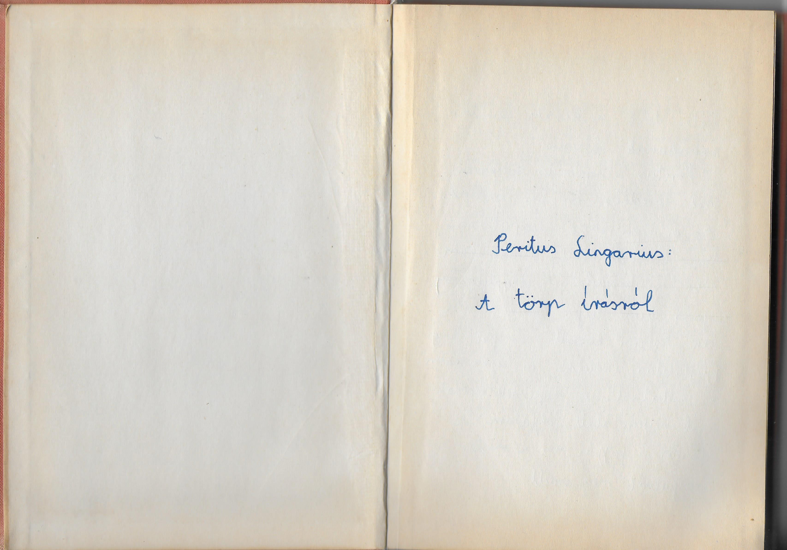

ElőnézetNyelvészeti munka
A törp írásról
A törp írásjelekkel, jelentésükkel és használatukkal foglalkozó munka. Peritus Lingarius töredékben fennmaradt munkáját a tulipános rend tagjai folytatták, kiegészítették.
Könyv megtekintése
Új lapon nyílik meg